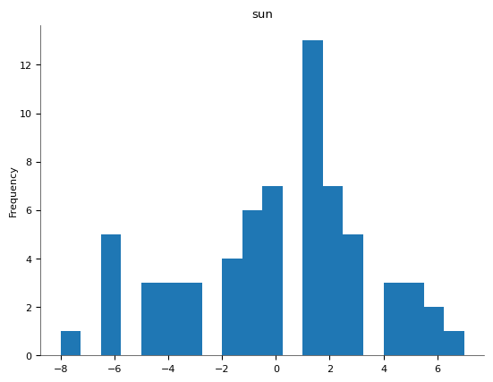
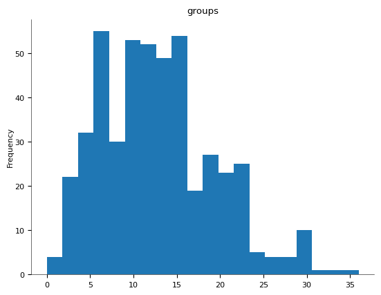

Hotel Booking Pace & Forecast Accuracy (2018–2020)
This dashboard analyzes how room night bookings evolved weekly and seasonally. It compares On the Books (OTB) performance with past years and recent booking behaviors to assess accuracy and optimize forecasting strategy.
Key Metrics Explained
- OTB Variance: Difference in room nights between current and prior periods.
- Pickup Analysis: How many room nights were picked up vs. projected.
- Segment Mix %: Proportional contribution of each channel/segment to total demand.
- ADR Trends: Weekly ADR movement by segment and channel.
Visual Insights


These visuals show forward-looking OTB performance vs. same period last year and past booking trends.
Segment-Level Pickup & Mix

Tracks segment mix trends and weekly pacing comparisons. Useful for revenue managers to assess how booking behavior evolves across time frames.
Bar & Line Chart Trends
Visual breakdown of weekly booking pace and ADR fluctuations across all market segments:



Week-over-Week ADR Changes
Analyzing changes in ADR from previous periods helps assess pricing decisions and forecast alignment:
Segment Forecast Accuracy
